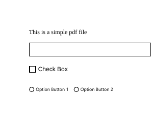
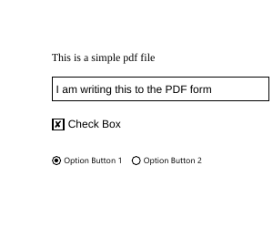
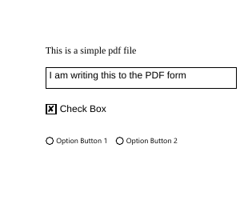

staplr is an R package, written by Priyanga Dilini
Talagala. It is a wrapper for the
[pdftk](https://www.pdflabs.com/tools/pdftk-the-pdf-toolkit/) which is a pdf
manipulation toolkit. The package can flip files around, “staple” (hehe)
different pdf files together or separate them into pages. It can
also fill PDF forms. For instance if we have this file.

We can fill it by doing:
library(staplr)## Warning in fun(libname, pkgname): couldn't connect to display ":0"fields = get_fields("files/staplr_pdfs/pdf1.pdf")
fields$TextField$value = "I am writing this to the PDF form"
fields$CheckBox$value = "Yes"
fields$OptionButton$value = 1
set_fields("files/staplr_pdfs/pdf1.pdf",
"files/staplr_pdfs/output.pdf",
fields)And you will get this file with the fields field.

This isn’t exactly a new feature. I
suggested the feature on late
February 2018, when the package was about a month old, pushed the first working
version on March 2018 and by May it
was on CRAN. It worked pretty much the same way it worked now. However in
reality I underestimated how complex a PDF could be even as I was interacting with it through pdftk which is doing the heavy lifting. In the past year, I have been iteratively fixing one edge case after another. Many of those issues could have been avoided if I skimmed the PDF file specification earlier… This is a tale of those fixes.
Prototype
I wrote an early version of a PDF filling function using on October 2017, to
fill Dungeons and Dragons character sheets.
My brief search on how to fill pdf forms lead me to pdftk. The way it filled pdfs appeared to be fairly simple.
As shown in the diagram above, pdftk fill pdf files using an intermediate text file in the
FDF format. FDF format is described in the PDF specification (which I didn’t read at the time)
but just looking at the file creates a nice illusion of simplicity.
pdftk files/staplr_pdfs/output.pdf generate_fdf output files/staplr_pdfs/output.fdf
cat -v files/staplr_pdfs/output.fdf # have to use -v or knitr complains about the second line## %FDF-1.2
## %M-bM-cM-OM-S
## 1 0 obj
## <<
## /FDF
## <<
## /Fields [
## <<
## /V (I am writing this to the PDF form)
## /T (TextField)
## >>
## <<
## /V /1
## /T (OptionButton)
## >>
## <<
## /V /Yes
## /T (CheckBox)
## >>]
## >>
## >>
## endobj
## trailer
##
## <<
## /Root 1 0 R
## >>
## %%EOFThis is the FDF output from the file we just filled and things look quite obvious.
You have field contents written as /V followed by field names written as /T (FieldName).
Text fields are written within () while button states are written after a / (in this case /Yes for the checked box).
My original implementation simply read this file and replaced the relevant /V lines
with the correct text.
fdfEdit = function(x, field,fdf){
if(x == TRUE & is.logical(x)){
x = '/Yes'
} else if (x == FALSE & is.logical(x)){
x = '/Off'
} else {
x %<>%
# note the excessive use of escapes due to use of str_replace later
gsub(x = ., pattern = '\\', replacement = "\\\\\\\\" , fixed= TRUE) %>%
gsub(x = ., pattern = '(',replacement = '\\\\(',fixed = TRUE) %>%
gsub(x = ., pattern = ')',replacement = '\\\\)', fixed = TRUE)
x = paste0('(',x,')')
}
fdf = stringr::str_replace(string = fdf,pattern = paste0('/V\\s.*\n/T\\s\\(',field,'\\)'),
replacement = paste0('/V ',x,'\n/T \\(',field,'\\)'))
return(fdf)
}In the code above x is the content of the field, field is the name and fdf is a
character containing the entire fdf file. So to fill a pdf file I would have to do something like
system('pdftk files/staplr_pdfs/pdf1.pdf generate_fdf output files/staplr_pdfs/output2.fdf')
fdf = readLines('files/staplr_pdfs/output2.fdf') %>% paste(collapse = '\n')
# write to text field
fdf = fdfEdit('I am writing this to the PDF form','TextField',fdf)
# check to checkbox
fdf = fdfEdit(TRUE,'CheckBox',fdf)
write(fdf,'files/staplr_pdfs/output2.fdf')
system("pdftk files/staplr_pdfs/pdf1.pdf fill_form files/staplr_pdfs/output2.fdf output files/staplr_pdfs/output2.pdf")
First “working” version
This was were I was when I started to work on staplr. The current version was enough for my personal use but even just looking at the example above, one can see that it is not enough. You may have noticed that the version above does not have a way to select the option buttons. Also if we look at the FDF file of the unfilled form:
pdftk files/staplr_pdfs/pdf1.pdf generate_fdf output files/staplr_pdfs/pdf1.fdf
cat -v files/staplr_pdfs/pdf1.fdf## %FDF-1.2
## %M-bM-cM-OM-S
## 1 0 obj
## <<
## /FDF
## <<
## /Fields [
## <<
## /V ()
## /T (TextField)
## >>
## <<
## /V /Off
## /T (OptionButton)
## >>
## <<
## /V /Off
## /T (CheckBox)
## >>]
## >>
## >>
## endobj
## trailer
##
## <<
## /Root 1 0 R
## >>
## %%EOFYou can see that there is no distinction in the way the checkbox and the option
button is encoded. For someone to be able to use this function as it is, they would
have to experiment with the file to see how the values change when certain buttons are
checked or certain options are selected. Ideally we would have a way of providing
more information about the fields to the end user. Thankfully, pdftk has a separate
command that creates a file with the required information,
pdftk files/staplr_pdfs/pdf1.pdf dump_data_fields output files/staplr_pdfs/pdf1_data
cat files/staplr_pdfs/pdf1_data## ---
## FieldType: Text
## FieldName: TextField
## FieldFlags: 4096
## FieldValue:
## FieldJustification: Left
## ---
## FieldType: Button
## FieldName: CheckBox
## FieldFlags: 0
## FieldValue: Off
## FieldJustification: Left
## FieldStateOption: Off
## FieldStateOption: Yes
## ---
## FieldType: Button
## FieldName: OptionButton
## FieldFlags: 49152
## FieldValue: Off
## FieldJustification: Left
## FieldStateOption: 1
## FieldStateOption: 2
## FieldStateOption: OffThis is great, we see fields’ current values, their types and possible states that a field can be in. Why isn’t something like this used as input in the first place? That is not for me to know.
This brings us to the basic way of how staplr currently
works. get_fields function will parse this file and return an R list that
contains information about the properties of the field. After editing this object
set_fields is used to generate an fdf file using the original fdfEdit function.
fields = get_fields('files/staplr_pdfs/pdf1.pdf')
fields## $TextField
## $TextField$type
## [1] "Text"
##
## $TextField$name
## [1] "TextField"
##
## $TextField$value
## [1] ""
##
##
## $CheckBox
## $CheckBox$type
## [1] "Button"
##
## $CheckBox$name
## [1] "CheckBox"
##
## $CheckBox$value
## [1] Off
## Levels: Yes Off
##
##
## $OptionButton
## $OptionButton$type
## [1] "Button"
##
## $OptionButton$name
## [1] "OptionButton"
##
## $OptionButton$value
## [1] Off
## Levels: 1 2 Offfields$TextField$value ='Some text'
set_fields(input_filepath = 'files/staplr_pdfs/pdf1.pdf',
output_filepath = 'files/staplr_pdfs/pdf2.pdf',
fields = fields)This alters our original pipeline a little
graph = create_graph() %>%
add_node(label = 'PDF file') %>% # 1
add_node(label = 'pdftk\ngenerate_fdf', # 2
node_aes = node_aes(width = .8)) %>%
add_node(label = 'FDF file') %>% # 3
add_node(label = 'pdftk\nfill_form') %>% # 4
add_node(label = 'Filled PDF', node_aes = list(width = 0.6)) %>% # 5
add_node(label = 'Edit FDF\nto fill fields', node_aes = list(width = 0.8)) %>% # 6
add_node(label = 'Filled FDF', node_aes = list(width = 0.6)) %>% # 7
set_node_attrs('shape',
'rectangle',
nodes = c(2,4,6)) %>%
set_node_attrs('fillcolor',
'lightgray',
nodes = c(2,4,6)) %>%
set_node_attrs(
node_attr = 'fontcolor',
values = 'black'
) %>%
add_edge(from=1,to=2) %>%
add_edge(from = 2, to = 3) %>%
add_edge(from = 4, to = 5) %>%
add_edge(from =1, to =4) %>%
add_edge(from = 3, to = 6) %>%
add_edge(from = 6, to = 7) %>%
add_edge(from = 7, to = 4)
graph %>%
add_node(label = 'pdftk \n dump_data_fields', node_aes = list(width = 1.2)) %>% # 8
add_node(label = 'data fields\nfile') %>% # 9
add_node(label = 'pdftk \n dump_data_fields', node_aes = list(width = 1.2)) %>% # 8
set_node_attrs('shape',
'rectangle',
nodes = c(8)) %>%
set_node_attrs('fillcolor',
'lightgray',
nodes = c(8)) %>%
set_node_attrs(
node_attr = 'fontcolor',
values = 'black'
) %>%
add_edge(from=1,to=8) %>%
add_edge(from = 8, to = 9) %>%
drawGraph()